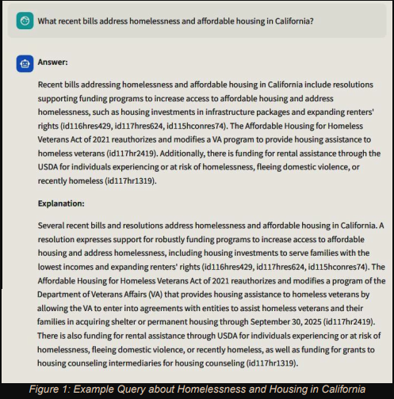

Retrieval-Augmented Generation for U.S. Congressional Bills
RAG · FAISS · Semantic Search · LLM Evaluation · Streamlit · GCP

Python
FAISS
all-MiniLM-L6-v2
LLMs
Streamlit
GCP
NLP
This project implements a Retrieval-Augmented Generation (RAG) system that answers
legislation-related questions by retrieving and summarizing U.S. Congressional bill text
with explicit citations.
The goal is to provide transparent, verifiable, and low-hallucination responses that help
users understand how proposed or enacted legislation may affect them.
GitHub Repo
Live Demo
Problem Statement
U.S. Congressional bills are lengthy, complex, and difficult for the public to interpret.
While large language models can generate summaries, they often hallucinate facts or fail to
reference the source material.
The challenge is to build a system that provides concise, accurate answers grounded directly
in legislative text, while maintaining reasonable response times and transparency.
Approach
We designed a modular RAG pipeline that separates document retrieval from text generation.
Bill text is chunked, embedded, indexed, and retrieved prior to any LLM invocation.
- Chunked Congressional bill text and generated embeddings using all-MiniLM-L6-v2
- Indexed embeddings using FAISS for efficient semantic search
- Retrieved top-k relevant chunks per query
- Generated summaries using free LLMs via OpenRouter
- Returned answers with citations linked to specific bills
System Architecture
The system follows a retrieve-then-generate workflow. Retrieval quality is prioritized to
minimize hallucination and ensure that generated responses remain grounded in factual text.
- Embedding model: all-MiniLM-L6-v2
- Vector index: FAISS
- LLMs evaluated: DeepSeek (lite), Gemini (lite), others via OpenRouter
- Frontend: Streamlit
- Deployment: Google Cloud Platform
Evaluation & Findings
- Embedding-based retrieval significantly reduced hallucinated responses
- Smaller, free LLMs performed adequately when retrieval quality was high
- Citation inclusion improved user trust and answer interpretability
- Latency was dominated by retrieval + LLM inference tradeoffs
Challenges & Limitations
- Long legislative documents required careful chunking strategies
- Some queries spanned multiple bills, complicating citation aggregation
- Free LLMs varied in consistency and reasoning depth
Extensions & Future Work
- Hybrid or multi-stage retrieval strategies
- Improved confidence scoring and answer reliability metrics
- Bill comparison and timeline-aware summarization
- Expanded domain coverage (state legislation, regulations)
Key Takeaways
This project strengthened my understanding of modern NLP system design, particularly the
importance of retrieval quality in controlling hallucinations. It also demonstrated how
scalable indexing, lightweight embeddings, and modular pipelines can be combined to build
transparent, production-oriented AI systems.